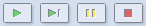
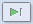

Вы найдете кнопки «Перезагрузить/Продолжить», «Пауза» и «Отменить» (слева направо) слева от панели динамического управления.

Эти кнопки влияют на одну или несколько заданий (выбор в представлении списка) или только на открытую задание/компонентную задание, в зависимости от того, выбран ли список заданий или детали заданий в динамическом окне.
Процедура перепечатки отдельных разделов отличается в зависимости от того, был ли результат вашей работы сортирован или несортирован (см. Сортированный и несортированный выход).
Задания с отсортированным выходом отмечены синей иконой папки в списке заданий. У вас есть два варианта переиздания:
 Предварительное условие: Опция «Пауза перед перепечаткой» должна быть включена в «Администрация > Конфигурация > Предпочтения > Перепечатка» (см. «Пауза перед перепечаткой»). Если это не так, вся задание перепечатывается без возможности вносить какие-либо изменения в настройки вывода.
Предварительное условие: Опция «Пауза перед перепечаткой» должна быть включена в «Администрация > Конфигурация > Предпочтения > Перепечатка» (см. «Пауза перед перепечаткой»). Если это не так, вся задание перепечатывается без возможности вносить какие-либо изменения в настройки вывода.
1. Чтобы перепечатать отсортированную работу с измененными настройками вывода, выберите папку в списке заданий и нажмите кнопку «Пуск» или выберите «Начать / Изменить работу» в контекстно-чувствительном меню. Копия задания создается в списке заданий.
2. Подождите, пока состояние работы будет «приостановлено» и откройте работу.
3. Перейдите на вкладку «Настройки работы».
Вы можете установить другие параметры вывода, если это необходимо в этой вкладке. Вы найдете более подробную информацию о настройках плана вывода в Раздел «Параметры производственного плана»:.
4. Нажмите «Сохранить» в нижней части диалога.
5. Перейдите на вкладку «Подписи», если вы не хотите перепечатывать все пластины в работе с измененными настройками.
6. Выберите один или несколько разделов, которые вы хотите перепечатать, тикая коробки перед разделами, которые вы хотите. Вы можете выбрать / отобрать весь список с помощью «Выбрать все» и «Выбрать все» соответственно.
7. Сохраните свой выбор и нажмите кнопку «Пуск» в нижней части диалога. Выбранные подписи снова выводятся с измененными настройками.
Перепечатка единичных пластин без измененных настроек вывода:

1. Если вы хотите перепечатать одну или несколько пластин, как они есть, например, из-за повреждения изображенной пластины, пометьте соответствующую работу и нажмите кнопку «Печать, но без изменения работы» или выберите «Пуск / Выбор разделения» в контекстно-чувствительном меню. Открывается окно «Start / Separation Selection»:
2. Выберите один или несколько разделов, которые вы хотите перепечатать, тикая коробки перед разделами, которые вы хотите. Вы можете выбрать / отобрать весь список с помощью «Выбрать все» и «Выбрать все» соответственно.
3. Нажмите «Применить», чтобы закрыть окно. Новая задание отображается для каждой выбранной подписи в списке заданий.
4. Задания для перепечатки сначала «приостановлены», если опция «Пауза перед перепечаткой» (см. «Пауза перед перепечаткой»). Чтобы распечатать задания, выберите их в списке заданий и нажмите зеленую кнопку Пуск.
Работы по перепечатке обрабатываются и печатаются автоматически, если не включена «Пауза перед перепечаткой».
 Примечание: Если у вас много заданий, ожидающих обработки, и вы хотите срочно вывести эту компонентную работу, вы можете изменить ее приоритет на немедленный вывод, нажав кнопку «Срочный» во вкладке «Заказать» (см. Печать «Срочные» задания).
Примечание: Если у вас много заданий, ожидающих обработки, и вы хотите срочно вывести эту компонентную работу, вы можете изменить ее приоритет на немедленный вывод, нажав кнопку «Срочный» во вкладке «Заказать» (см. Печать «Срочные» задания).
Примечание: Вы также можете перепечатать отдельные пластины с помощью пульта дистанционного управления в программном обеспечении Heidelberg CP2000.
Если вы заданиеете с несортированным выходом без протокола FBDI, все разделения заданий отображаются как составные задания в списке заданий. Задания в списке заданий отмечены желтой иконкой папки, если протокол FBDI включен в диспетчере экспортных двигателей Tiff-B. В этом случае для перепечатки можно пометить всю папку или расширить папку и выбрать нужные вам задания компонентов.
Чтобы перепечатать задания или задания компонентов с и без изменения настроек вывода, продолжайте, как описано в описании. Задания с отсортированным выходом.
Copyright © 2013 Heidelberger Druckmaschinen AG